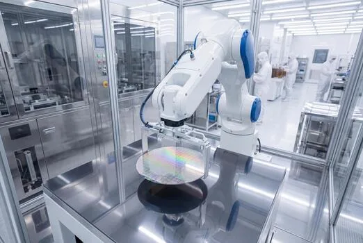

Topstar — Profile
China's clean room robot leader, inside SMIC and YMTC fabs.
Nobody tweets about clean room robots. But inside every new Chinese wafer fab, a silent army of machines moves 300mm wafers, fills aseptic pharma lines and keeps dust counts at zero — and China now makes most of them.

Clean room robots are the opposite of humanoids — no marketing, no demos, just precision under strict ISO cleanliness classes. But the market is huge and accelerating: China's clean room robots market is valued around US$1.73 billion in 2025 and projected to reach US$11.5 billion by 2035, a 20.8% CAGR. Global semiconductor cleanroom robots alone hit ~US$2.1 billion in 2026.
| Company | Topstar (拓斯达) | SIASUN (新松) | Estun (埃斯顿) |
|---|---|---|---|
| Share | #1, ~20.9% (2025, RMB 390M) | ~17.1% (RMB 320M) | ~15.9% (2026E RMB 940M) |
| Signal | SMIC 14nm + YMTC 3D NAND lines; SEMI F47 | Chinese Academy of Sciences lineage | 1,000+ robots at BOE; hollow-wrist design |
Topstar leads with RMB 390 million in 2025 shipments and a 20.9% share. Its Titan 1500C vacuum handler and clean-air arms have passed SEMI F47 vibration certification and hit MCBF ≥10 million cycles — enough for full-line deliveries to SMIC's 14nm FinFET fabs and YMTC's 3D NAND lines. SIASUN, with its Chinese Academy of Sciences heritage, holds ~17.1%. Estun, China's largest industrial robot maker by shipments, deployed over 1,000 lightweight clean robots at BOE display fabs and pioneered a hollow-wrist structure that routes cables inside the arm — no dust-shedding, tighter space — reaching ISO Class 5 (Class 4 for SCARA). It also signed a three-year supply framework with pharma giant WuXi Biologics for clean six-axis robots in aseptic isolators.
The fastest-growing slice is autonomous mobile robots (AMRs) for wafer transport. Youibot's OW series meets Class 1 cleanliness with vibration under 0.2G — better than the 0.5G SEMI standard — replacing expensive overhead rail systems. Jielo broke ground on a RMB 1.2 billion AMR base in Suzhou targeting semiconductor fabs. Semiconductor AMRs alone are a ~US$560 million global market in 2026.
Clean room robots are the industrial twin of the humanoid supply chain we mapped earlier — same motors, reducers, encoders and sensors, but tuned for dust-free precision. When China dominates chip-fab automation, it completes the loop from components to fabs. That is a quieter, and arguably more valuable, robotics story than any humanoid demo.
China's clean room robot leader, inside SMIC and YMTC fabs.
China's largest industrial robot maker; 1,000+ robots at BOE.
The Chinese Academy of Sciences robot pioneer.
The broader industrial base these clean machines come from.
Company profiles, product pages and supplier analysis for China's robotics ecosystem.